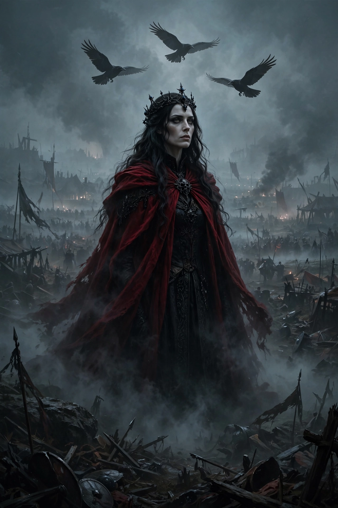

From Wikipedia, the free encyclopedia
| The Morrígan | |
|---|---|
| Affiliation | Irish mythology; goddess of war, fate and sovereignty |
| Forms | A single goddess or a trio (with Badb and Macha/Anand) |
| Shapes | Crow/raven above the battlefield; beautiful woman; hag |
| Associated hero | Cú Chulainn |
| Prophecy | The world's end, in her poem after the Second Battle of Moytura |

The Morrígan (Irish: Mór Ríoghain, "Great Queen" or "Phantom Queen") is a goddess of Irish mythology associated with war, fate, death and the sovereignty of the land. She appears as one goddess or as a trio — most often with Badb and Macha (sometimes Nemain or Anand) — shapeshifts between a beautiful woman, a hag, and the crow or raven that screams over battlefields, incites warriors to slaughter, and prophesies victories and the end of the world. She is among the most powerful and least domesticated figures of the Irish tradition.
Before the Second Battle of Moytura she mates with the Dagda at Samhain, standing with one foot on either bank of the river Unius, and in return directs the Tuatha Dé Danann's strategy against the Fomorians; after the victory she pronounces two great prophecies — one of peace and plenty, one of the world's ending in greed, kin-slaying and winter — among the most famous poems in Irish. In the Táin Bó Cúailnge she comes to Cú Chulainn in successive shapes: offering love and aid as a beautiful woman (he refuses, and she swears enmity), attacking him as eel, wolf and heifer while he fights (he wounds her each time), and finally, as an old woman milking a cow, tricking him into blessing her three times and so healing herself. At his death she settles, in the form of a crow, on his shoulder — the sign by which his enemies know the hero is truly dead.
Scholars connect the Morrígan with the sovereignty goddesses who embody the land and confer kingship, and with the battle-furies and fate-women of the wider Indo-European world — the valkyries are a close Norse parallel. Her modern popularity, in neopaganism and fantasy, as a dark goddess of female power simplifies (as its devotees often note) a figure the sources make stranger: not evil, but the terror and elation of battle itself, and the land's own voice demanding its due.
Celtic mythology · Brigid · Valkyrie · Mythology · Kali (fellow dark goddess)